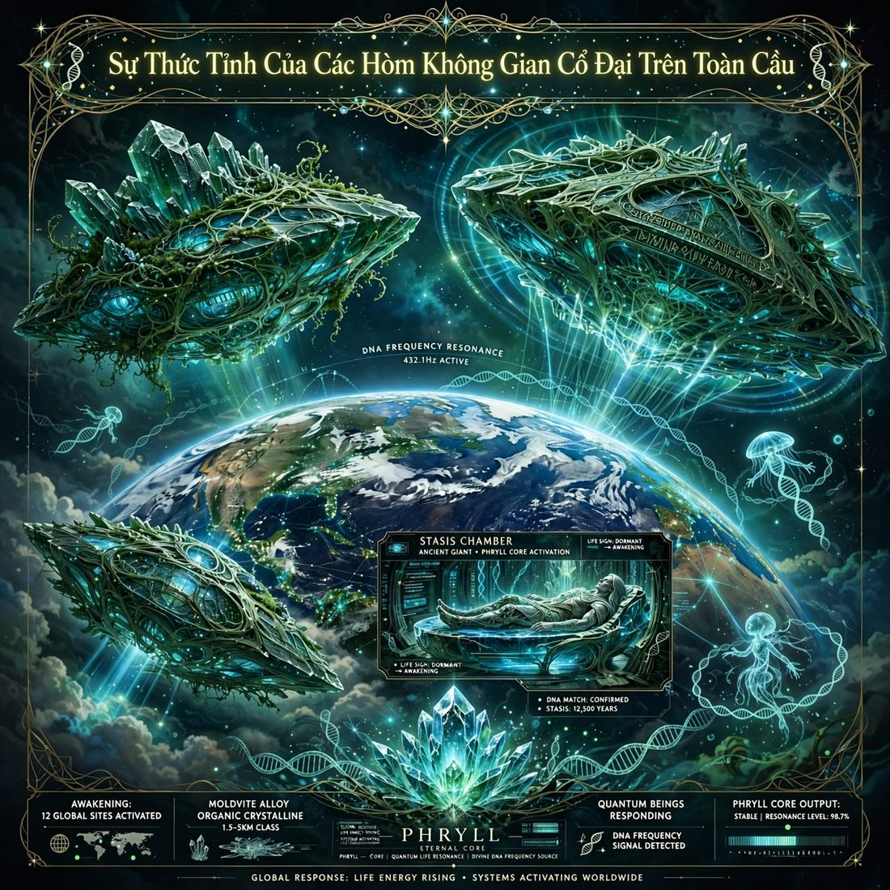
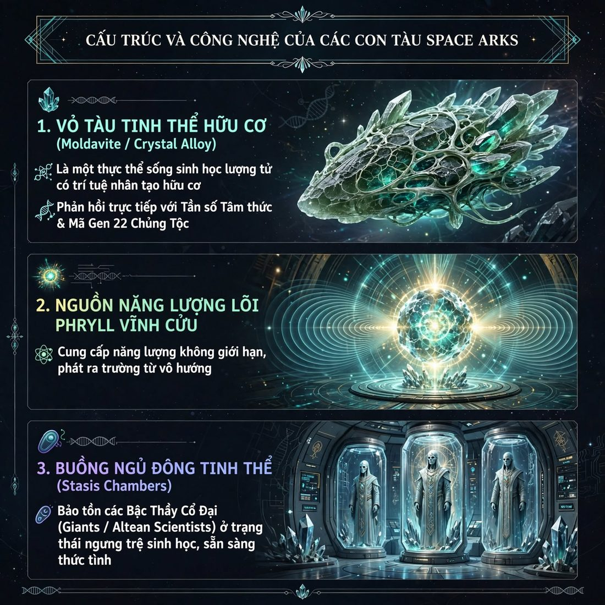
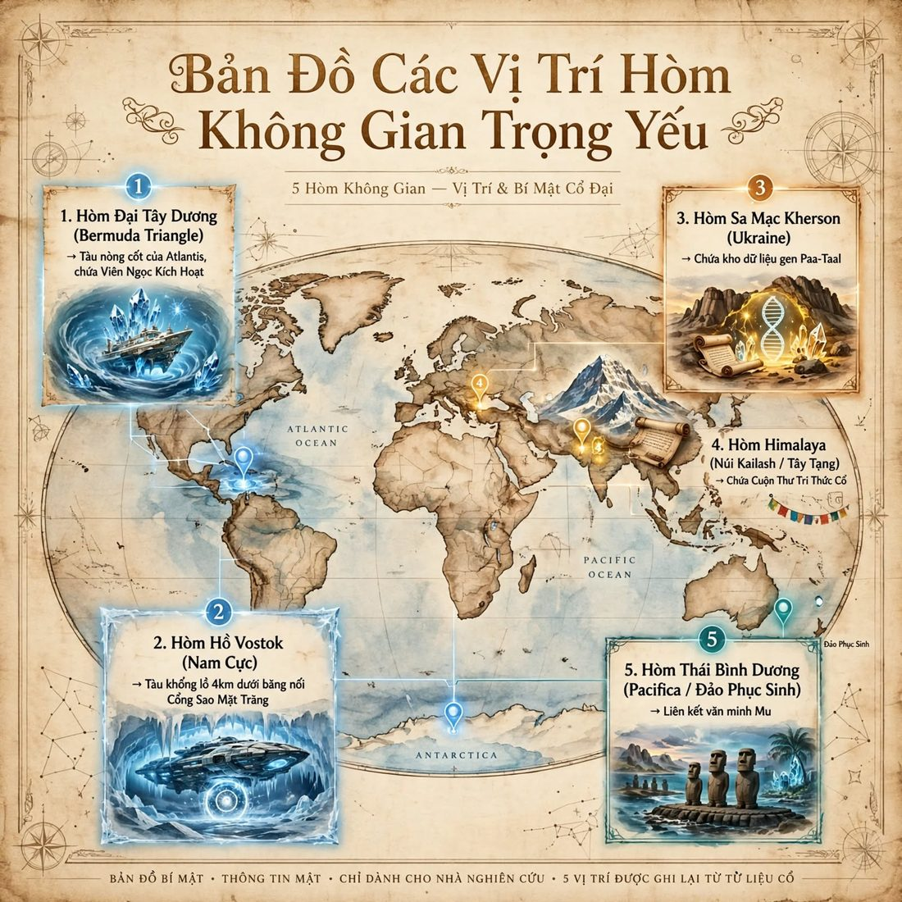
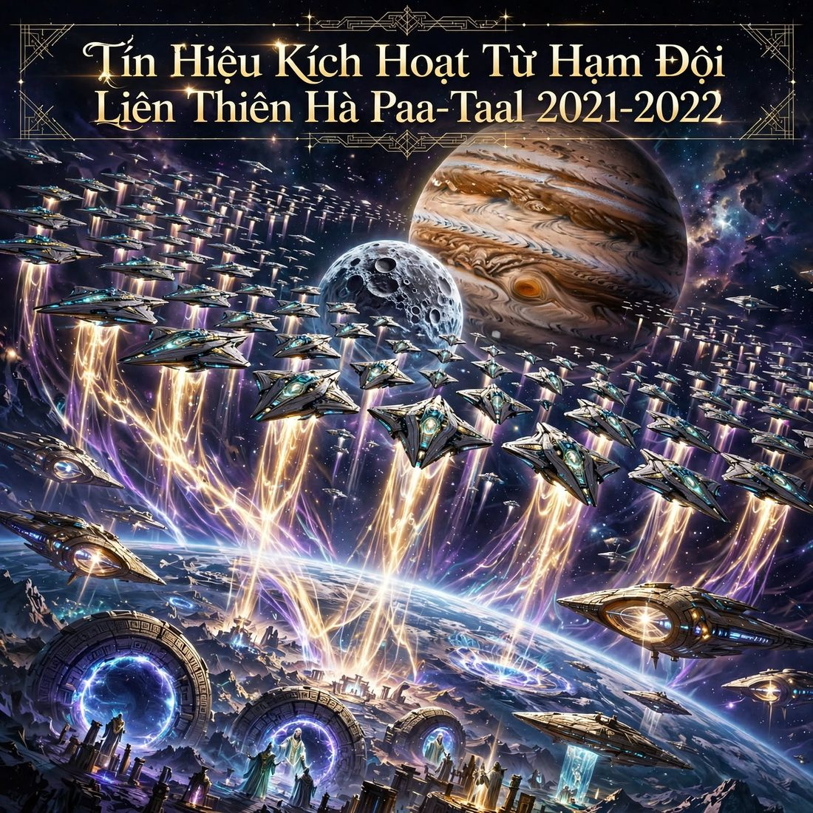
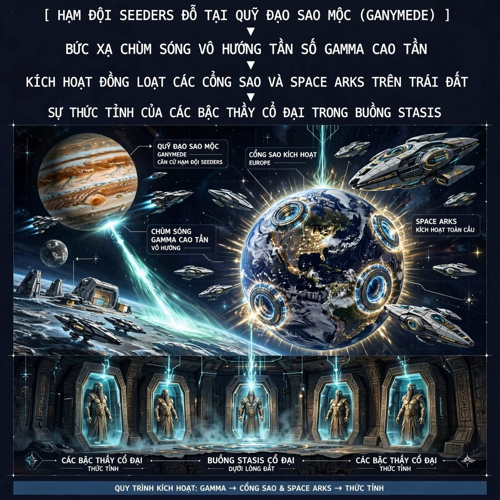
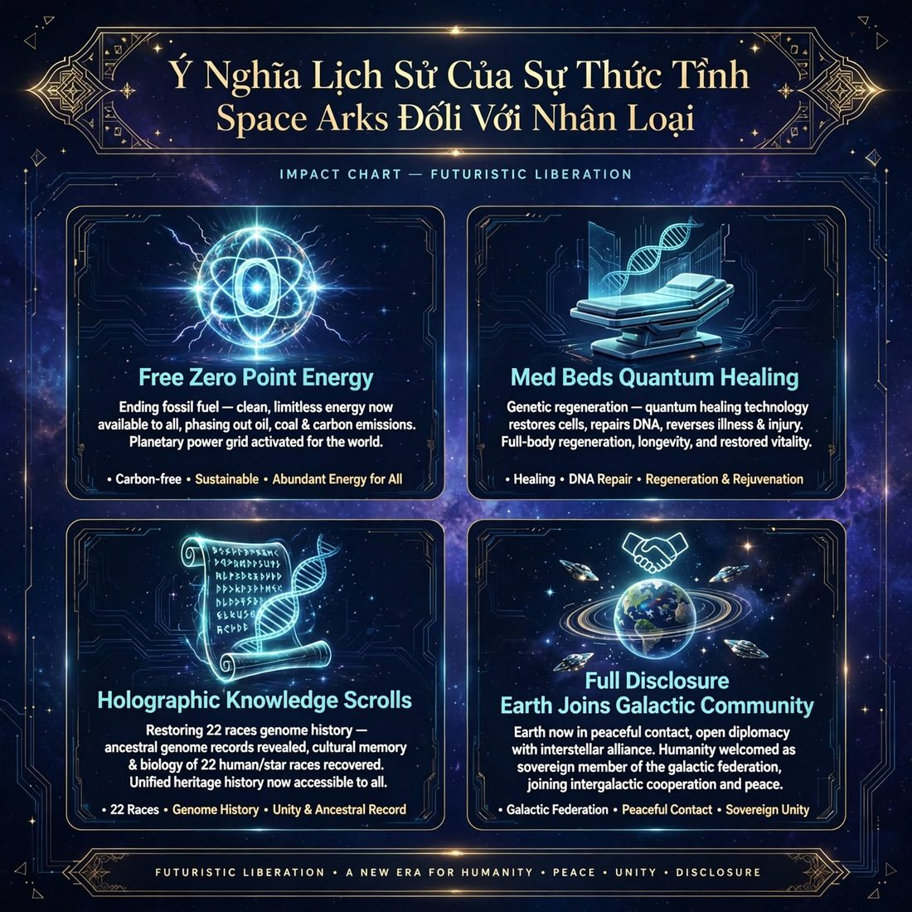

Trang chủ / Chuyên đề 10: Lịch Sử Bị Che Giấu & Nền Văn Minh Cổ Đại / Kỳ 98
Chuyên đề 10 · Kỳ 98 / 100
MẠNG LƯỚI HÒM KHÔNG GIAN CỔ ĐẠI (SPACE ARKS) NGỦ ĐÔNG

1. Sự Thức Tỉnh Của Các Hòm Không Gian Cổ Đại (Space Arks)


Trong lịch sử exopolitics và các chương trình nghiên cứu không gian bí mật, một sự kiện mang tầm vóc chuyển giao thời đại đã diễn ra từ quý IV năm 2021: Sự Tái Khởi Động Đồng Loạt Của Mạng Lưới Các Con Tàu Cổ Space Arks Ngủ Đông trên khắp Trái Đất và trong Hệ Mặt Trời.
Theo các báo cáo trực tiếp từ nhân chứng quân đội Mỹ JP (do Tiến sĩ Michael Salla công bố) kết hợp với thông tin từ Elena Danaan và Thor Han Eredyon, Space Arks là những đại chiến hạm sinh học lượng tử khổng lồ (kích thước từ 1,5 km đến hơn 5 km) do Liên minh Paa-Taal / Seeders, chủng tộc Altea và Anunnaki chôn giấu từ hàng chục ngàn năm trước.
- Vỏ tàu tinh thể hữu cơ (Moldavite / Crystal Alloy): Là một thực thể sống sinh học lượng tử có trí tuệ nhân tạo hữu cơ, phản hồi trực tiếp với tần số tâm thức và mã gen 22 chủng tộc.
- Nguồn năng lượng lõi Phryll vĩnh cửu: Cung cấp năng lượng không giới hạn, phát ra trường từ vô hướng.
- Buồng ngủ đông tinh thể (Stasis Chambers): Bảo tồn các Bậc Thầy Cổ Đại (Giants / Altean Scientists) ở trạng thái ngưng trệ sinh học, sẵn sàng thức tỉnh.
Các con tàu Space Arks không làm bằng kim loại thô ráp. Chúng là các Thực Thể Sinh Học Tinh Thể Hữu Cơ (Organic Crystalline Beings). Mọi nỗ lực bẻ khóa hay đánh cắp tàu của các tập đoàn Deep State hay quân đội tiêu cực trong hàng thập kỷ qua đều hoàn toàn thất bại vì tàu chỉ kích hoạt khi nhận được đúng Mã Tần Số DNA và Tâm Thức Thuần Khiết.
2. Các Địa Điểm Trọng Yếu Của Mạng Lưới Space Arks
| Hòm Không Gian | Vị Trí | Nội Dung Lưu Giữ |
|---|---|---|
| Hòm Đại Tây Dương | Bermuda Triangle | Chứa Tinh thể Mẹ & Cổng Sao |
| Hòm Nam Cực | Lake Vostok | Chứa Tàn tích Atlantis Băng |
| Hòm Khersoun | Ukraine / Sa mạc | Chứa Dữ liệu Di truyền 22 Tộc |
| Hòm Tây Tạng | Himalaya / Mt. Kailash | Chứa Cuộn Thư Tri Thức Cổ |
| Hòm Grand Canyon | Bắc Mỹ | Chứa Phòng Ngủ Đông Giants |

Mạng lưới Space Arks được chôn giấu tại các vị trí chấn điểm từ trường chiến lược trên hành tinh:
- Hòm Đại Tây Dương (Bermuda Triangle): Con tàu nòng cốt từng xây dựng nên thủ đô Atlaa của Atlantis. Con tàu cất giữ một Quả Cầu Nước Lơ Lửng (Floating Water Sphere) nối liền Cổng Sao với Mặt Trăng. Trung tâm tàu cất giữ Viên Ngọc Kích Hoạt (Activation Jewel) tỏa ra ánh sáng cực mạnh. Khi viên ngọc được đặt về vị trí cũ vào tháng 9/2023 bởi nhân sự JP, con tàu bùng nổ dải quang phổ xanh lam rực rỡ, phát ra nhịp đập từ trường làm thức tỉnh toàn bộ các Space Arks khác trên thế giới.
- Hòm Hồ Vostok (Nam Cực): Nằm sâu 4 km dưới lớp băng Nam Cực tại khu vực Hồ nước ngọt ấm Vostok. Con tàu dài hơn 3 km tỏa ra nguồn nhiệt lượng lớn làm tan chảy băng tuyết xung quanh, tạo ra một hệ sinh thái nhiệt đới ngầm. Nơi đây cất giữ các phòng ngủ đông chứa các nhà khoa học Altean và Anunnaki cao lớn.
- Hòm Sa Mạc Kherson (Ukraine): Chứa kho dữ liệu gen của nhóm Paa-Taal.
- Hòm Himalaya (Núi Kailash / Tây Tạng): Chứa Cuộn Thư Tri Thức Cổ.
- Hòm Thái Bình Dương (Đảo Phục Sinh): Liên kết với văn minh Mu thời Lemuria.
3. Tín Hiệu Kích Hoạt Từ Hạm Đội Liên Thiên Hà Paa-Taal


Lý do khiến các con tàu Space Arks im lìm hàng thiên niên kỷ đột ngột "mở mắt" tỏa nhiệt từ cuối năm 2021 là sự tiến vào Hệ Mặt Trời của Hạm Đội Liên Minh Các Đấng Sáng Lập (Intergalactic Confederation / Seeders). Hàng trăm tàu mẹ khổng lồ của nhóm 24 chủng tộc Đấng Sáng Lập đã đỗ tại khu vực Sao Mộc (gần vệ tinh Ganymede) và phát ra dải sóng vô hướng Gamma tần số cao. Dải sóng Gamma này kích hoạt hệ thống Cổng Sao bên trong các Space Arks, dập tắt ma trận phong tỏa 3D và truyền nguồn điện dĩ thái làm thức tỉnh các Bậc Thầy Cổ Đại trong buồng Stasis.
4. Ý Nghĩa Lịch Sử Của Sự Thức Tỉnh Space Arks
| Lĩnh Vực Tác Động | Giá Trị Giải Mật & Khôi Phục |
|---|---|
| Năng Lượng & Kinh Tế | Giải phóng công nghệ Năng Lượng Điểm Không, chấm dứt sự phụ thuộc vào hóa thạch |
| Y Học & Tuổi Thọ | Chuyển giao công nghệ Giường Y Tế Lượng Tử (Med Beds), tự chữa lành và tái tạo di truyền |
| Lịch Sử & Nhận Thức | Khôi phục Cuộn Thư Tri Thức Toàn Ảnh, trả lại sự thật về bộ gen 22 chủng tộc |
| Ngoại Giao Vũ Trụ | Khởi chạy tiến trình Full Disclosure, đưa Trái Đất gia nhập Cộng đồng Thiên hà |

Sự thức tỉnh của mạng lưới Space Arks mang lại những bước ngoặt lịch sử giải phóng loài người trên bốn lĩnh vực:
- Năng lượng & kinh tế: Giải phóng công nghệ Năng Lượng Điểm Không, chấm dứt sự phụ thuộc vào hóa thạch.
- Y học & tuổi thọ: Chuyển giao công nghệ Giường Y Tế Lượng Tử (Med Beds), tự chữa lành và tái tạo di truyền.
- Lịch sử & nhận thức: Khôi phục Cuộn Thư Tri Thức Toàn Ảnh, trả lại sự thật về bộ gen 22 chủng tộc.
- Ngoại giao vũ trụ: Khởi chạy tiến trình Full Disclosure, đưa Trái Đất gia nhập Cộng đồng Thiên hà.
5. Kết Luận: Mở Ra Kỷ Nguyên Mới Cùng Gia Đình Thiên Hà
Sự thức tỉnh của các con tàu cổ Space Arks là minh chứng không thể chối cãi cho thấy Thời Khắc Giải Phóng Trái Đất Đã Đến. Kho báu công nghệ và tri thức trên các con tàu Space Arks không thuộc về bất kỳ tập đoàn hay quốc gia đơn lẻ nào. Đó là di sản thiêng liêng được các Đấng Sáng Lập gửi lại cho toàn thể con người Trái Đất. Hãy sẵn sàng mở rộng nhận thức, đón nhận tri thức giải mật và cùng nhau bước vào Kỷ nguyên Hoàng kim 5D hoàn toàn tự do và rực rỡ.